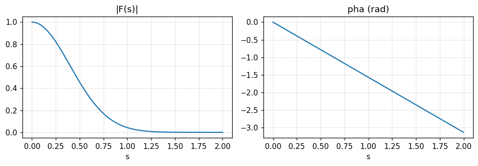
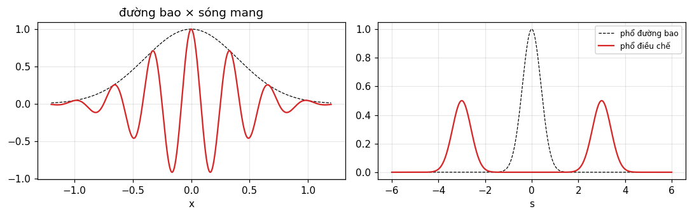

Tỉ lệ, cộng, dịch, điều chế, tích chập, Rayleigh, công suất, tự tương quan, đạo hàm: mười định lý cho phép suy ra hầu hết biến đổi mà không phải tích phân.
Nêu và dùng mười định lý ở bảng 6.1, kể cả điều kiện và dạng đối xứng của chúng.
Suy ra biến đổi mới từ sáu cặp chuẩn bằng định lý thay vì tích phân.
Diễn giải vật lý: dịch là pha tuyến tính, điều chế là hai bản sao nửa cường độ, tích chập là nhân phổ.
Dùng Rayleigh, công suất và tự tương quan để nối năng lượng theo x với năng lượng theo s.
Dùng định lý đạo hàm, và biết định lý áp dụng cho hàm suy rộng ra sao.
Dùng nút, chấm tròn hoặc phím ← → để chuyển slide.
PHẦN 1/5
01
Sáu cặp chuẩn và tính tương hỗ
Bối cảnh: Muốn hiểu định lý, cần vài cặp biến đổi cụ thể để thấy định lý làm gì.
Vướng mắc: Các cặp này ở dạng "quá dễ" nên dễ bỏ qua chuyện hai chiều biến đổi thuận và ngược nói hai điều khác nhau.
Giải pháp: Giữ sáu cặp làm kho tham chiếu, cộng ba cặp trong giới hạn từ Gauss.
Sáu cặp tham chiếu
Tương hỗ: hai câu nói khác nhau
Các cặp trong giới hạn: 1, e^{i\pi x}, \cos\pi x
1/5 · Sáu cặp chuẩn và tính tương hỗ
Vì sao có "bộ định lý"
Một số ít định lý đóng vai trò nền tảng khi tư duy với biến đổi Fourier. Phần lớn quen thuộc dưới dạng này hay khác; ở đây ta gom chúng như các tính chất toán học đơn giản. Phần lớn cách suy ra rất đơn giản, và khả năng áp dụng cho hàm xung kiểm được bằng dãy xung chữ nhật; chứng minh chặt chẽ bằng đại số hàm suy rộng ở cuối chương (Bracewell, tr. 105).
1/5 · Sáu cặp chuẩn và tính tương hỗ
Sáu cặp tham chiếu
Ba cặp đầu là những cặp quen thuộc: Gauss tự biến đổi, sinc và xung chữ nhật, sinc^2 và tam giác (tr. 105 đến 106):
Ba cặp còn lại là cặp trong giới hạn: 1\supset\delta(s), \cos\pi x\supset\mu(s), \sin\pi x\supset i\nu(s). Notebook kiểm ba cặp đầu tại s=0.3: 0.7537, 0.8584, 0.7368.
1/5 · Sáu cặp chuẩn và tính tương hỗ
Tương hỗ: hai câu nói khác nhau
Hình 6.1 nói \Pi(s) là biến đổi của \text{sinc}\,x; ta có thể thêm hình đổi trái phải nói sinc s là biến đổi của \Pi(x), hệ quả của tính tương hỗ, nhưng hai phát biểu có bản chất khác. Phát biểu thứ nhất nói tích phân của tích hai hàm khá bình thường bằng 1 khi |s|<\tfrac12 và bằng 0 khi |s|>\tfrac12, đổi đột ngột dù s đổi rất ít (tr. 106).
Thử số: tích phân của sinc nhảy quanh |s|=\tfrac12
Cắt tích phân ở |x|\le200: tại s=0.3 được 0.9984, tại s=0.7 được 0.0011, và ngay tại s=0.5 được 0.4997, đúng trung bình của 1 và 0. Hai cách (tích phân dao động và công thức qua hàm \text{Si}) cho cùng số.
1/5 · Sáu cặp chuẩn và tính tương hỗ
Cặp trong giới hạn: 1\supset\delta(s)
Từ kết quả của Gauss và một phép thế biến đơn giản: \int e^{-\pi a^2x^2}e^{-i2\pi xs}dx=|a|^{-1}e^{-\pi s^2/a^2}. Khi a\to0, vế phải là dãy xác định \delta(s), còn vế trái là biến đổi của thứ mà trong giới hạn là 1. Vậy 1 là biến đổi Fourier trong giới hạn của \delta(s) (tr. 106). Số đo: đỉnh tại s=0 là 10 khi a=0.1 và 20 khi a=0.05.
Từ \int e^{-\pi a^2x^2}e^{i\pi x}e^{-i2\pi xs}dx=|a|^{-1}e^{-\pi(s-1/2)^2/a^2} ta được e^{i\pi x}\supset\delta(s-\tfrac12). Tách phần thực và ảo, phần chẵn và lẻ: \cos\pi x\supset\mu(s) và i\sin\pi x\supset-\nu(s) (tr. 108). Số đo: với cửa sổ Gauss a=0.05, đỉnh của \cos\pi x tại s=0.5 cao 10 và diện tích 0.5, đúng \tfrac12\delta(s-\tfrac12).
Các cặp được chọn có nhiều tính chất: gián đoạn, xung, giới hạn bề rộng, không âm và lẻ. Các ví dụ duy nhất phức hoặc không đối xứng là e^{i\pi x}\supset\delta(s-\tfrac12) và \delta(x-\tfrac12)\supset e^{-i\pi s} (tr. 108). Chúng cũng đều có diễn giải vật lý sẽ được nêu sau.
1/5 · Sáu cặp chuẩn và tính tương hỗ
Tự kiểm tra phần 1
Vì sao \int\text{sinc}\,x\,e^{-i2\pi xs}dx có giá trị 0.4997 tại s=0.5?
Biến đổi trong giới hạn của \cos\pi x là gì?
Đỉnh của dãy Gauss |a|^{-1}e^{-\pi s^2/a^2} thay đổi ra sao khi a\to0?
Gợi ý: trung bình hai phía của bước nhảy; cặp xung chẵn \mu(s); cao lên như 1/a và hẹp lại, diện tích giữ 1.
PHẦN 2/5
02
Định lý tỉ lệ, cộng và dịch
Bối cảnh: Nén trục thời gian, cộng hai tín hiệu, hoặc trễ một tín hiệu là những phép biến đổi quen thuộc.
Vướng mắc: Chúng làm gì với phổ, và có bảo toàn diện tích, năng lượng, biên độ không?
Giải pháp: Tỉ lệ đổi ngược hai trục, cộng bảo toàn tuyến tính, và dịch chỉ đổi pha tuyến tính theo tần số.
Tỉ lệ và bảo toàn diện tích, năng lượng
Cộng và tuyến tính
Dịch: pha tuyến tính, độ trễ nhóm
2/5 · Định lý tỉ lệ, cộng và dịch
Định lý tỉ lệ
Nếu f(x) có biến đổi F(s) thì f(ax) có biến đổi |a|^{-1}F(s/a). Chứng minh bằng đổi biến x'=ax (Bracewell, tr. 108). Dấu môđun bù cho việc đổi cận khi a<0.
Nén trục này thì giãn trục kia, và diện tích giữ nguyên
Nén thang thời gian tương ứng với giãn thang tần số. Nhưng khi một thành viên giãn ngang, thành viên kia không chỉ co ngang mà còn cao lên, sao cho diện tích bên dưới không đổi (hình 6.2, tr. 109). Số đo với Gauss a=2: f(2x) có diện tích 0.5; biến đổi tại 0 cao 0.5; tại s=0.3 bằng 0.4659, đúng \tfrac12e^{-\pi(0.15)^2}.
Hình 1. Định lý tỉ lệ với Gauss: khi a tăng, f(ax) hẹp lại (trái) còn biến đổi (phải) rộng ra và thấp xuống đúng 1/a, nên diện tích bên dưới giữ nguyên.
2/5 · Định lý tỉ lệ, cộng và dịch
Cosinusoid giãn ra: xung dịch chỗ, không co lại
Trường hợp đặc biệt của hàm tuần hoàn và xung: giãn một cosinusoid chỉ dịch các xung của biến đổi. Đây không đơn thuần là nén thang s, vì khi đó cường độ xung phải giảm (hình 6.3, tr. 109 đến 110). Số đo với cửa sổ Gauss a=0.05: đỉnh của \cos2\pi(2x) tại s=2 cao 10 và của \cos2\pi(4x) tại s=4 cũng cao 10.
2/5 · Định lý tỉ lệ, cộng và dịch
Dạng đối xứng của định lý tỉ lệ
Nếu f(x) có biến đổi F(s) thì |a|^{1/2}f(ax) có biến đổi |b|^{1/2}F(bs) với b=a^{-1}. Khi mỗi hàm giãn hoặc co, nó cũng thấp xuống hay cao lên để bù, sao cho tích phân của bình phương không đổi, như sẽ thấy từ định lý công suất (hình 6.4, tr. 110). Số đo: \int f^2 = 0.7071 và \int(|a|^{1/2}f(ax))^2 cũng 0.7071 với a=2.
Nếu f và g có biến đổi F và G thì f+g có biến đổi F+G. Định lý phản ánh sự phù hợp của biến đổi Fourier với bài toán tuyến tính. Hệ quả: af có biến đổi aF với a là hằng số (tr. 110 đến 111). Số đo: biến đổi của e^{-\pi x^2}+2e^{-|x|} tại s=0.3 là 1.6322, đúng tổng các biến đổi.
Cộng
f(x)+g(x)\ \supset\ F(s)+G(s)
2/5 · Định lý tỉ lệ, cộng và dịch
Định lý dịch
Nếu f(x) có biến đổi F(s) thì f(x-a) có biến đổi e^{-i2\pi as}F(s) (tr. 111). Dịch một hàm theo chiều dương một lượng a không đổi biên độ của thành phần nào, nên thay đổi ở biến đổi chỉ là pha. Số đo với Gauss dịch a=0.25 tại s=0.3: độ lớn 0.7537 (không đổi) và pha -27 độ, đúng -2\pi as.
Dịch
f(x-a)\ \supset\ e^{-i2\pi a s}\,F(s)
2/5 · Định lý tỉ lệ, cộng và dịch
Vì sao pha tỉ lệ với s
Mỗi thành phần bị trễ pha một lượng tỉ lệ với s: tần số càng cao, thay đổi góc pha càng lớn. Lý do là độ dời tuyệt đối a chiếm phần lớn hơn của chu kỳ s^{-1} khi tần số cao. Trễ pha bằng a/s^{-1} chu kỳ, tức 2\pi as radian; hằng số tỉ lệ 2\pi a là tốc độ đổi pha theo tần số (tr. 111). Số đo: độ dốc của pha đã gỡ cuốn theo s là -1.5708 rad trên đơn vị s, đúng -2\pi a.

Hình 2. Dịch Gauss đi 0.25: độ lớn |F| (trái) giữ nguyên hình Gauss, còn pha (phải) là đường thẳng dốc −2πa = −π/2 theo s.
2/5 · Định lý tỉ lệ, cộng và dịch
Ví dụ vật lý: quay chùm sáng bằng lăng kính
Định lý dịch hiển nhiên trong một hiện thực vật lý cụ thể. Chiếu ánh sáng đơn sắc song song vuông góc lên một khẩu độ. Muốn quay chùm nhiễu xạ một góc nhỏ, ta đổi góc tới đúng góc đó. Nhưng đó chỉ là cách làm pha chiếu sáng đổi tuyến tính trên khẩu độ; cách khác là chèn lăng kính mỏng gây trễ tỉ lệ với bề dày lăng kính ở mỗi điểm (tr. 111 đến 112; chương 13 quay lại).
2/5 · Định lý tỉ lệ, cộng và dịch
Xoắn ốc: dịch một phần tư làm biến đổi xoắn 90 độ trên mỗi đơn vị s
Cho hàm có biến đổi thực. Dịch nó \tfrac14 đơn vị x tương ứng với xoắn đều \pi/2 trên mỗi đơn vị s; mặt phẳng chứa F(s) bị biến dạng thành mặt xoắn ốc (hình 6.6, tr. 112 đến 113). Số đo: pha tại s=1 là -90 độ, tại s=2 là 180 độ (hoặc +180 sau khi cuộn vòng).
2/5 · Định lý tỉ lệ, cộng và dịch
Cosin trượt: từ thực sang ảo
Dịch nhỏ một cosin giữ gần nguyên phần thực của biến đổi nhưng thêm phần ảo lẻ. Dịch tăng thì phần ảo tăng cho tới khi dịch \pi/2 thì không còn phần thực; rồi phần thực trở lại với dấu ngược, và ở dịch \pi cả hai thành phần đảo pha hoàn toàn (hình 6.7, tr. 113). Hệ số DFT tại tần số của cosin: 0.995 và -0.0998 (thực, ảo) khi lệch pha 0.1 rad; 0 và -1 khi lệch \pi/2; -1 và 0 khi lệch \pi.
2/5 · Định lý tỉ lệ, cộng và dịch
Tự kiểm tra phần 2
Nếu f(3x) hẹp lại 3 lần, biến đổi thay đổi ra sao về chiều rộng và chiều cao?
Dịch f đi a làm gì tới |F| và tới pha?
Vì sao bậc thang hay lăng kính đều làm chùm sáng quay?
Gợi ý: rộng gấp 3, thấp còn 1/3; |F| giữ nguyên, pha thêm -2\pi as; vì cả hai đều làm pha đổi tuyến tính trên khẩu độ.
PHẦN 3/5
03
Định lý điều chế và định lý tích chập
Bối cảnh: Điều chế biên độ là cách phát thanh và truyền hình mang tín hiệu trên sóng mang.
Vướng mắc: Phổ của tín hiệu điều chế trông thế nào, và làm sao dùng tích chập để tính nhanh phổ của tích?
Giải pháp: Nhân với cosin nhân đôi phổ ra hai bản sao nửa cường độ; tích chập trở thành nhân phổ và ngược lại.
Điều chế: hai bản sao nửa cường độ
Tích chập là nhân phổ, và ba phép kiểm
Hai mươi dạng của định lý
3/5 · Định lý điều chế và định lý tích chập
Định lý điều chế
Nếu f(x) có biến đổi F(s) thì f(x)\cos\omega x có biến đổi \tfrac12F(s-\omega/2\pi)+\tfrac12F(s+\omega/2\pi) (Bracewell, tr. 113 đến 114). Chứng minh viết \cos\omega x qua hai hàm mũ phức rồi áp dụng định lý dịch cho biến đổi.
Biến đổi mới là tích chập của F(s) với \tfrac12\delta(s+\omega/2\pi)+\tfrac12\delta(s-\omega/2\pi). Trong vô tuyến và truyền hình, sóng mang điều hòa được điều chế bằng một đường bao; phổ của đường bao tách thành hai phần mỗi phần nửa cường độ, dịch dọc trục s một lượng \pm\omega/2\pi (hình 6.8, tr. 115). Số đo: với đường bao Gauss và sóng mang f_0=3, đỉnh tại s=3 cao 0.5, đúng \tfrac12F(0).

Hình 3. Điều chế bằng cosin: phổ của đường bao Gauss (nét đứt) tách thành hai bản sao nửa cường độ ở ±3 (đỏ).
3/5 · Định lý điều chế và định lý tích chập
Xung cao tần: phổ là hai sinc
Xung \Pi(x/X)\cos2\pi fx có phổ \tfrac12X\{\text{sinc}[X(s+f)]+\text{sinc}[X(s-f)]\} (bài tập 8, tr. 131). Với X=10, f=1: tại s=1 phổ bằng 5; tại s=1.05 bằng 3.2607, bằng cả tích phân số và công thức.
Xung \Pi(x/X)(1+M\cos2\pi Fx)\cos2\pi fx có phổ gồm sóng mang \tfrac12X\text{sinc} tại \pm f và bốn dải bên cường độ \tfrac14MX tại \pm f\pm F (bài tập 9, tr. 132). Với X=200, f=50, F=5, M=0.6: sóng mang 100, dải bên 30, tỉ số 0.3 đúng M/2.
3/5 · Định lý điều chế và định lý tích chập
Định lý tích chập
Nếu f có biến đổi F và g có biến đổi G thì f*g có biến đổi FG: tích chập hai hàm là nhân hai biến đổi (tr. 117). Chứng minh: đổi thứ tự lấy tích phân rồi dùng định lý dịch.
Tích chập
f*g\ \supset\ F\,G,\qquad f\,g\ \supset\ F*G
3/5 · Định lý điều chế và định lý tích chập
Tuyến tính cộng bất biến quyết định khi nào dùng được
Một đoàn tàu chậm chạy qua cầu: tải tại x là f(x) và độ võng tại x là h(x). Vì các thanh không bị đẩy quá miền ứng suất tỉ lệ biến dạng, độ võng là tổ hợp tuyến tính có trọng số của tải. Nhưng khi tàu đi tiếp, dạng độ võng không đi theo nguyên vẹn, nên không viết được bằng tích chập. Tính tuyến tính cộng bất biến theo x mới làm phân tích Fourier hữu ích; đó cũng là điều kiện cho sóng điều hòa vào cho sóng điều hòa ra cùng tần số (tr. 115).
3/5 · Định lý điều chế và định lý tích chập
Bốn cách phát biểu bằng lời
Biến đổi của một tích chập là tích các biến đổi.
Biến đổi của một tích là tích chập các biến đổi.
Tích chập của hai hàm là biến đổi của tích các biến đổi của chúng.
Tích của hai hàm là biến đổi của tích chập các biến đổi của chúng.
Ký hiệu gạch ngang gọn: \overline{f*g}=\bar f\bar g và \overline{fg}=\bar f*\bar g; cũng có f*g*h\supset FGH và f*(gh)=(f*g)h dạng kết hợp (tr. 117).
3/5 · Định lý điều chế và định lý tích chập
Ba phép kiểm hay dùng
Diện tích dưới tích chập bằng tích các diện tích: \int(f*g)=\int f\int g.
Hoành độ các trọng tâm cộng lại: \langle x\rangle_{f*g}=\langle x\rangle_f+\langle x\rangle_g.
Các mômen bậc hai cộng khi \langle x\rangle_f hoặc \langle x\rangle_g bằng 0, nghĩa là phương sai cộng (tr. 118).
Số đo với f=e^{-x}H(x) và g=\Pi: diện tích 1, trọng tâm 1, phương sai 1.0833 =1+1/12.
3/5 · Định lý điều chế và định lý tích chập
Hai mươi dạng của định lý
Khi tính đến liên hợp phức và đảo dấu biến, có tới 20 dạng của định lý tích chập thường được cần. Bracewell liệt kê 10 dạng viết gọn (tr. 118 đến 119), như f*g\supset FG, f*g(-)\supset FG(-), f*g^*(-)\supset FG^*, f^*(-)*g^*(-)\supset F^*G^*. Notebook kiểm 9 dạng đầu bằng DFT với dãy phức, so tổng trực tiếp với tích các DFT.
3/5 · Định lý điều chế và định lý tích chập
Định lý tích chập bằng số: hai cách
Với hai dãy phức độ dài 64, tích chập vòng tính bằng tổng trực tiếp và bằng \text{IFFT}(F\cdot G) lệch nhau tối đa 1.5e-14. Đây là lý do FFT giúp tích chập nhanh (module 3 và 14).
3/5 · Định lý điều chế và định lý tích chập
Tự kiểm tra phần 3
Nhân với \cos2\pi f_0x làm gì với phổ, và cường độ mỗi bản sao là bao nhiêu?
Vì sao hình dạng độ võng cầu khi tàu chạy không phải một tích chập?
Phương sai của f*g bằng bao nhiêu nếu phương sai của f là 2 và của g là 3 (diện tích 1)?
Gợi ý: hai bản sao nửa cường độ dịch \pm f_0; vì thiếu bất biến theo x; 5.
PHẦN 4/5
04
Rayleigh, công suất và tự tương quan
Bối cảnh: Năng lượng của một hệ có thể tính bằng tích phân theo tọa độ hoặc theo thành phần phổ.
Vướng mắc: Hai cách có cho cùng kết quả không, và với hai hàm khác nhau (điện áp và dòng) thì sao?
Giải pháp: Rayleigh cho bình phương một hàm, công suất cho tích hai hàm, và tự tương quan cho biến đổi của phổ năng lượng.
Định lý Rayleigh
Định lý công suất
Định lý tự tương quan
4/5 · Rayleigh, công suất và tự tương quan
Định lý Rayleigh
Tích phân bình phương môđun của một hàm bằng tích phân bình phương môđun của phổ (Bracewell, tr. 119). Định lý tương ứng với định lý Parseval của chuỗi Fourier, được Rayleigh dùng lần đầu năm 1889 khi nghiên cứu bức xạ vật đen; mỗi tích phân biểu diễn năng lượng của hệ, một lấy theo mọi giá trị của tọa độ, một lấy theo mọi thành phần phổ (hình 6.9, tr. 119 đến 120).
Trong giới toán học, định lý còn gọi là định lý Plancherel (Titchmarsh, 1924), theo M. Plancherel, người năm 1910 nêu điều kiện để nó đúng: đúng khi cả hai tích phân tồn tại. Gần đây, Carleman chỉ ra nó đúng chỉ cần một trong hai tích phân tồn tại. Rayleigh đơn giản giả định các tích phân tồn tại (tr. 120).
4/5 · Rayleigh, công suất và tự tương quan
Thử số: hai ví dụ
Với Gauss e^{-\pi x^2}: \int f^2 = 0.7071 và \int|F|^2 = 0.7071. Với e^{-x}H(x): \int|f|^2 = 0.5 và \int|F|^2ds=\int ds/(1+4\pi^2s^2) = 0.5. Cùng số theo hai cách tính độc lập.
4/5 · Rayleigh, công suất và tự tương quan
Định lý công suất
Tổng quát hơn Rayleigh, cho tích hai hàm: \int f\,g^*dx=\int F\,G^*ds. Mỗi vế biểu diễn năng lượng hay công suất theo hai cách. Cách thứ nhất lấy công suất tức thời là tích một cặp biến liên hợp chính tắc (điện trường và từ trường, điện áp và dòng, lực và vận tốc) tích phân theo thời gian hoặc không gian. Cách thứ hai nhân các thành phần phổ rồi lấy tích phân trên toàn phổ (tr. 120).
Với f=e^{-\pi(x+0.3)^2} và g=e^{-\pi(x-1)^2}: \int fg\,dx = 0.0497 và \int FG^*ds = 0.0497, trùng nhau. Đây là dạng hai hàm thực nên F và G phức.
4/5 · Rayleigh, công suất và tự tương quan
Với f, g thực: chỉ cần phần thực và phần ảo
Nếu f và g thực thì F, G là Hermitian: phần thực chẵn, phần ảo lẻ. Các số hạng lẻ không đóng góp vào tích phân vô hạn, nên \int fg\,dx=\int[\text{Re}F\,\text{Re}G+\text{Im}F\,\text{Im}G]ds (hình 6.11, tr. 121). Trong ví dụ trên, tích phân hai phần này là 0.1886 và -0.1389, tổng 0.0497.
Hàm tự tương quan \int f^*(u)f(u+x)du của f có biến đổi |F(s)|^2. Trong truyền thông, đó là phát biểu: tự tương quan của một tín hiệu là biến đổi Fourier của phổ công suất của nó; hình 6.12 minh họa (tr. 122). Đặc điểm riêng so với tự chập: thông tin về pha của F(s) hoàn toàn vắng mặt trong |F|^2, cũng như tự tương quan không chứa thông tin về pha các thành phần Fourier (module 3, tr. 45).
Tự tương quan
f\star f\ \supset\ |F(s)|^2
4/5 · Rayleigh, công suất và tự tương quan
Thử số: \Pi\star\Pi=\Lambda và phổ \text{sinc}^2
Tự tương quan của \Pi là \Lambda, biến đổi tại s=0.3 là 0.7368, đúng \text{sinc}^2(0.3)=|{\rm sinc}\,0.3|^2. Với Gauss, tự tương quan chuẩn hóa e^{-\pi x^2/2} có biến đổi \sqrt2e^{-2\pi s^2} với tích phân 1: đó là phổ công suất chuẩn hóa tích phân bằng 1 (bài tập trong sách, tr. 122).
4/5 · Rayleigh, công suất và tự tương quan
Giới hạn C(x) và phổ công suất; định lý Wiener
Với tín hiệu chạy mãi, dãy tự tương quan chuẩn hóa \gamma_X(x) có thể tiến về giới hạn C(x), và khi đó phổ công suất chuẩn hóa của đoạn dài X tiến về dạng giới hạn: C(x)\supset|\Phi_\infty(s)|^2. Định lý tương ứng cho tín hiệu không tắt còn được gọi là định lý Wiener (1949) (tr. 122 đến 123). Ví dụ f=\cos ax có C=\cos ax và phổ là cặp xung \tfrac12\delta(s\pm a/2\pi). Số đo với đoạn 10 s của \cos2\pi(5t): tỉ lệ công suất tại +5 Hz và -5 Hz là 0.5 mỗi bên.
4/5 · Rayleigh, công suất và tự tương quan
Tự kiểm tra phần 4
Rayleigh đúng cho e^{-x}H(x): hai vế bằng bao nhiêu?
Vì sao định lý công suất cần liên hợp g^*?
Tự tương quan có khôi phục được tín hiệu không?
Gợi ý: ½; để hai vế cho năng lượng dương với hàm phức; không, vì mất pha.
PHẦN 5/5
05
Định lý đạo hàm, hàm suy rộng và tổng kết
Bối cảnh: Đạo hàm là phép toán rất thường gặp: vận tốc từ vị trí, dòng từ điện tích.
Vướng mắc: Trong miền tần số đạo hàm trông thế nào, và tính kỹ thuật thế nào khi hàm không có đạo hàm?
Giải pháp: Đạo hàm là nhân với i2\pi s; các định lý áp dụng cho hàm suy rộng, và gom lại thành bảng 6.1.
Định lý đạo hàm và đạo hàm của tích chập
Biến đổi của hàm suy rộng, chứng minh
Bảng 6.1 và các bài tập chọn
5/5 · Định lý đạo hàm, hàm suy rộng và tổng kết
Định lý đạo hàm
Nếu f(x) có biến đổi F(s) thì f'(x) có biến đổi i2\pi sF(s) (Bracewell, tr. 124). Chứng minh: viết đạo hàm là giới hạn của thương sai phân rồi dùng định lý dịch và cộng. Số đo với f=e^{-\pi x^2}: biến đổi của f' tại s=0.3 có độ lớn 1.4207, đúng 2\pi s\,e^{-\pi s^2}.
Đạo hàm
f'(x)\ \supset\ i2\pi s\,F(s)
5/5 · Định lý đạo hàm, hàm suy rộng và tổng kết
Đạo hàm tăng cường tần số cao
Nhân với i2\pi s nghĩa là đạo hàm tăng cường thành phần tần số cao, làm yếu thành phần tần số thấp và triệt tiêu thành phần tần số 0 (hình 6.13 và 6.14, tr. 125). Áp dụng lặp lại nhân với (i2\pi s)^n: cực đại của |(2\pi s)^ne^{-\pi s^2}| nằm ở 0.3989 (n=1), 0.5642 (n=2), 0.691 (n=3), dịch dần lên tần số cao, đúng \sqrt{n/2\pi}.
Hình 4. Đạo hàm nhiều lần nhân phổ với (i2πs)ⁿ: tần số thấp bị làm yếu, cực đại dịch dần lên cao (n = 1, 2, 3), và tần số 0 bị triệt tiêu.
5/5 · Định lý đạo hàm, hàm suy rộng và tổng kết
Khi đạo hàm có gián đoạn vô hạn: xung vào cuộc
Thường phép nhân với i2\pi s làm tích phân của |i2\pi sF(s)| phân kỳ; tương ứng đạo hàm f'(x) có gián đoạn vô hạn. Tình huống này được ký hiệu xung và các đạo hàm của nó thu nạp (tr. 125). Số đo với bậc thang tắt dần e^{-\varepsilon x}H(x): biến đổi của đạo hàm là i2\pi s/(\varepsilon+i2\pi s), lệch khỏi 1 (biến đổi của \delta) chỉ 3.2e-04 khi \varepsilon=10^{-3} và s=0.5.
5/5 · Định lý đạo hàm, hàm suy rộng và tổng kết
Đạo hàm của một tích chập
Từ định lý đạo hàm cùng định lý tích chập: nếu h=f*g thì h'=f'*g=f*g': đạo hàm của tích chập là tích chập của một hàm với đạo hàm của hàm kia (tr. 126). Có thể viết bằng xung: h=\delta*h nên h'=\delta'*h=(\delta'*f)*g=f'*g. Công thức chủ yếu có giá trị lý thuyết, như suy ra quan hệ bất định và công thức đáp ứng của bộ lọc từ đáp ứng xung và đáp ứng bậc thang.
Đạo hàm của tích chập
(f*g)'=f'*g=f*g'
5/5 · Định lý đạo hàm, hàm suy rộng và tổng kết
Thử số: đáp ứng qua đáp ứng bậc thang
Với mạch RC (h=e^{-t}H(t), đáp ứng bậc thang s(t)=1-e^{-t}) và vào x(t)=\sin(2\pi t) bật mượt, đáp ứng y=x*h bằng x'*s: lệch tối đa 5.3e-04. Nghĩa là biết đáp ứng bậc thang là đủ để tính đáp ứng với mọi vào khả vi.
5/5 · Định lý đạo hàm, hàm suy rộng và tổng kết
Biến đổi của hàm suy rộng
Cho p(x) là hàm suy rộng xác định bởi dãy p_\tau; biến đổi các phần tử của dãy thành P_\tau(s). Từ định lý năng lượng, dãy P_\tau chính quy nên xác định hàm suy rộng P(s), biến đổi Fourier của p, với \int PF\,ds=\int p(x)f(-x)dx cho mọi hàm thử (tr. 127). Số đo với p=\delta(x-a), a=0.5: \int e^{-i2\pi as}e^{-\pi s^2}ds = 0.4559, đúng e^{-\pi a^2}.
Định lý năng lượng cho hàm suy rộng
\int P(s)\,F(s)\,ds=\int p(x)\,f(-x)\,dx
5/5 · Định lý đạo hàm, hàm suy rộng và tổng kết
Nhân với đa thức, và vì sao không có tích hai hàm suy rộng
Nếu \phi(x) có đạo hàm mọi cấp nhưng tăng không quá nhanh (như đa thức; không gồm e^x, \log x) thì \phi p vẫn là hàm suy rộng. Nhưng không có gì được gọi là tích của hai hàm suy rộng: tích hai dãy xác định không nhất thiết chính quy (tr. 127 đến 128). Vì vậy [\delta(x)]^2 không có nghĩa, và định lý công suất chỉ chứng minh được dạng \int PF\,ds=\int pf(-x)dx (tr. 129).
5/5 · Định lý đạo hàm, hàm suy rộng và tổng kết
Chứng minh chặt: tỉ lệ cộng dịch và đạo hàm
Các "chứng minh" ngắn trong chương hữu ích khi học định lý nhưng chưa phải chứng minh chặt (như Lighthill, 1958). Với hàm suy rộng, tỉ lệ và dịch được chứng minh cùng lúc: p(ax+b)\supset|a|^{-1}e^{i2\pi bs/a}P(s/a). Định lý đạo hàm: biến đổi của p_\tau' là i2\pi sP_\tau nên biến đổi của p' là i2\pi sP (tr. 128 đến 129). Số đo với Gauss, a=2, b=0.3, s=0.4: độ lớn 0.441, pha 21.6 độ, tính bằng tích phân số và công thức.
Mọi định lý trên mở rộng dễ dàng sang hai chiều. Phép quay và cắt xiên, không có ở một chiều, gắn với các định lý cơ bản mới; đối xứng tròn đưa vào các trường hợp riêng quan trọng; và định lý afin cho hàm dạng f(ax+by+c,\,dx+ey+f) có nhiều ý nghĩa cho đồ họa (Bracewell và cộng sự 1993, Bracewell 1994) (tr. 129).
Bài tập chọn: hình thang, \text{sinc}^4, xe^{-\pi x^2} và định lý tích phân
Bài 10 (tr. 132): hình thang f=2\Lambda(x/2)-\Lambda(x) có F=\text{sinc}^2s\,(1+2\cos2\pi s), tại s=0.3 bằng 0.2814. Bài 17 (tr. 133): theo Rayleigh, \int\text{sinc}^4x\,dx=\int\Lambda^2=\tfrac23 = 0.6667. Bài 21: biến đổi của xe^{-\pi x^2} là -is\,e^{-\pi s^2}, độ lớn 0.2261 tại 0.3. Bài 19 và 20: biến đổi của tích phân bất định \int_{-\infty}^xf là F(s)/(i2\pi s) cộng \tfrac12F(0)\delta(s) (số hạng bị lãng quên): số đo lệch 1.2e-17 khi kiểm \text{FT}[H*f-H]=(F-1)/(i2\pi s).
5/5 · Định lý đạo hàm, hàm suy rộng và tổng kết
Tự kiểm tra phần 5
Biến đổi của f'' là gì?
Vì sao h'=f'*g=f*g'?
Vì sao "biến đổi của \int f là F/i2\pi s" chưa đủ?
Gợi ý: (i2\pi s)^2F; từ định lý đạo hàm và tích chập; thiếu số hạng \tfrac12F(0)\delta(s) (thành phần một chiều).
TỔNG KẾT
Điều cần mang theo
Tỉ lệ đổi ngược hai trục và giữ diện tích; dịch chỉ nhân e^{-i2\pi as}, giữ |F|.
Điều chế cho hai bản sao nửa cường độ dịch \pm f_0; tích chập là nhân phổ và ngược lại.
Rayleigh và công suất nối năng lượng theo x với theo s; tự tương quan \supset|F|^2 và bỏ mất pha.
Đạo hàm là nhân i2\pi s; đạo hàm của tích chập chuyển sang một thừa số.
Định lý mở rộng cho hàm suy rộng, nhưng không có tích hai hàm suy rộng.
📜 Bối cảnh lý thuyết & lịch sử
Định lý Rayleigh được Rayleigh dùng lần đầu năm 1889 khi nghiên cứu bức xạ vật đen; nó tương ứng định lý Parseval của chuỗi Fourier. Trong giới toán học nó mang tên Plancherel, người năm 1910 nêu điều kiện đúng; Carleman sau đó chỉ ra chỉ cần một tích phân tồn tại (Bracewell, tr. 119 đến 120).
Định lý tự tương quan dạng cho tín hiệu không tắt còn gọi là định lý Wiener (1949) (tr. 122). Sách kể các nguồn: Titchmarsh (1924) cho Plancherel, Lighthill (1958) cho chứng minh chặt qua hàm suy rộng, Bell (1972) về quang phổ biến đổi Fourier, Bracewell và cộng sự (1993) và Bracewell (1994) về định lý afin hai chiều (tr. 130).
🔎 Case study thực tế
Sóng mang và tin nhắn. Một máy phát điều biên phát xung dài X=200 với sóng mang f=50 và tin điều biên F=5, chỉ số điều chế M=0.6. Nhờ định lý điều chế, phổ gồm sóng mang cao 100 và hai dải bên cao 30 mỗi phía (tỉ số 0.3 =M/2). Mọi thông tin của tin nhắn nằm trong hai dải bên; sóng mang chỉ là "cần trục". Bề rộng phổ cần thiết là 2F quanh sóng mang, không phụ thuộc f: cơ sở để chia kênh vô tuyến.
Cùng logic giải thích vì sao một máy thu chỉ cần nhân với cosin sóng mang để đưa dải bên về gốc, rồi lọc thông thấp (giải điều chế).
Notebook tự sinh dữ liệu bằng mã, không cần tải file ngoài. Mọi con số trên trang này được in ra từ notebook và đối chiếu bằng hai phương pháp độc lập.
⚠️ Những bẫy diễn giải sai
"Nén trục x thì nén cả trục s."
Ngược lại: nén x thì giãn s, và biến đổi cao lên |a|^{-1} để giữ diện tích (Gauss a=2: đỉnh 0.5).
"Giãn một cosinusoid thì các xung của phổ co lại về gốc và yếu đi."
Các xung chỉ dịch chỗ, cường độ giữ nguyên (đỉnh 10 và 10 ở hai tần số), vì tỉ lệ s đơn thuần sẽ làm yếu xung (tr. 109 đến 110).
"Dịch một hàm làm thay đổi phổ biên độ."
Chỉ đổi pha: độ lớn giữ 0.7537 còn pha thêm -27 độ tại s=0.3 (tr. 111).
"Biến đổi của tích phân bất định \int f chỉ là F/i2\pi s."
Thiếu \tfrac12F(0)\delta(s) (thành phần một chiều). Lập luận "đạo hàm của \int f là f" chỉ xác định phần không phải một chiều (bài tập 19, tr. 133).
✅ Quiz tự kiểm tra
Bấm một đáp án để chấm ngay và xem giải thích. Kết quả không được lưu.
Nguồn tham khảo
R. N. Bracewell, The Fourier Transform and Its Applications, 3rd ed., McGraw-Hill, 2000, chương 6 (tr. 105 đến 135).
Nội dung được viết với sự hỗ trợ của AI (Claude), rồi được kiểm lại. Mọi con số do notebook Jupyter tính ra và đối chiếu bằng hai phương pháp độc lập; số trang trích dẫn lấy từ văn bản OCR của hai giáo trình gốc. Vẫn có thể còn sai sót, mong bạn báo lại.